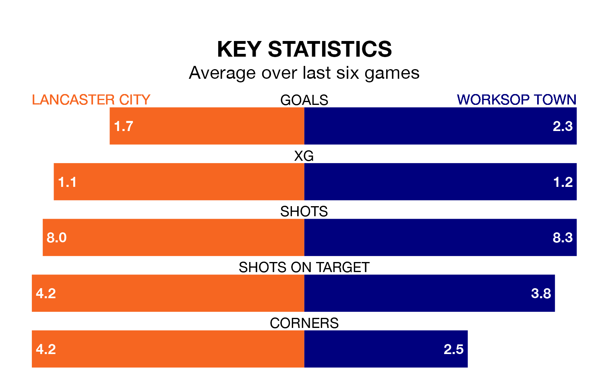

Two of Northern Premier League's meanest defences go head-to-head at Giant Axe on Saturday, when Lancaster City host Worksop Town.
Only two sides – Rylands and Macclesfield – have conceded fewer goals than Lancaster to date: the home side have let in just 24 goals in 19 games.
Worksop have conceded the same number of goals in 20 games, giving them the joint-third tightest back line so far this season.
Worksop are fourth in the table after 20 games, of which they have won 11 and drawn four, earning 37 points.
Lancaster are nine places behind Town in 13th, with eight wins and five draws putting them on 29 points.
City are in reasonable form in Northern Premier League, with three wins and two draws from their last six games.
With two wins and two draws over that period, the away side's form is worse – they have taken eight points from 18, compared to the hosts' 11.
Lancaster's last match was on December 16, a 4-2 win against Stafford Rangers.
Worksop beat United of Manchester 4-0 last time out, also on December 16.
Updated: 12:43, 20/12/23